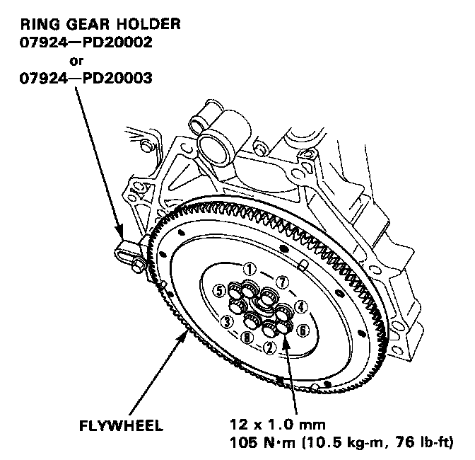
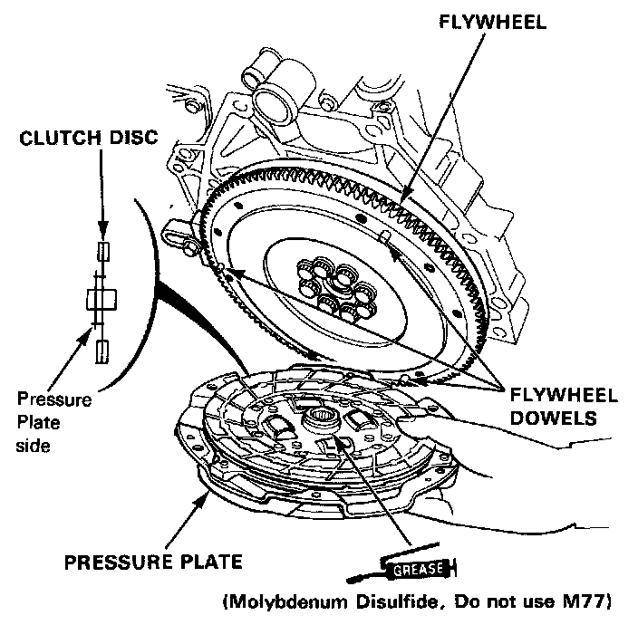
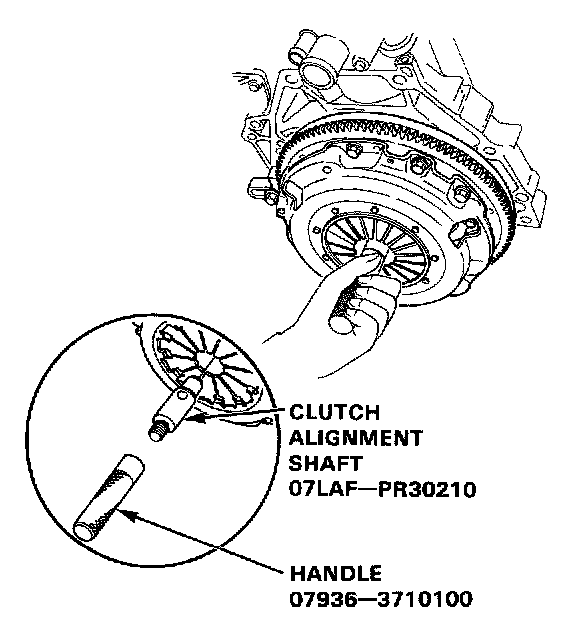
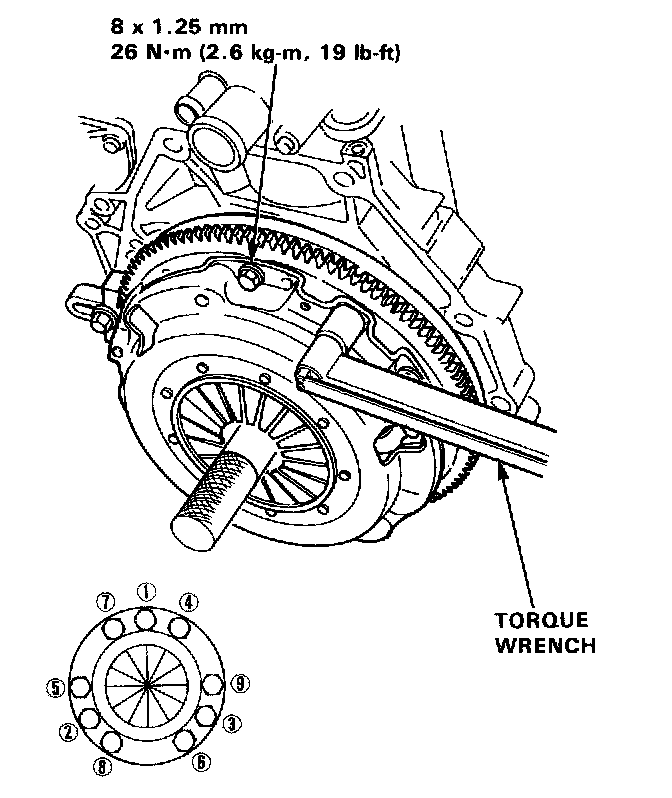

Clutch Disc: Service and Repair
Installation1. Align the hole in the flywheel with the crankshaft dowel pin and install the flywheel. Install the bolts only finger tight.

2. Install the special tool, then torque the flywheel bolts in a crisscross pattern, as shown in image.

3. Install the clutch disc and pressure plate by aligning the flywheel dowels with dowel holes in the pressure plate.
NOTE: Apply molybdenum disulfide grease to the spine of the clutch disc. (Do not use M77).
4. Install the attaching bolts finger tight.

5. Insert the special tool into the splined hole in the clutch disc.

6. Torque the bolts in a crisscross pattern as shown. Tighten them two turns at a time to prevent warping the diaphragm spring.
7. Remove the special tools.